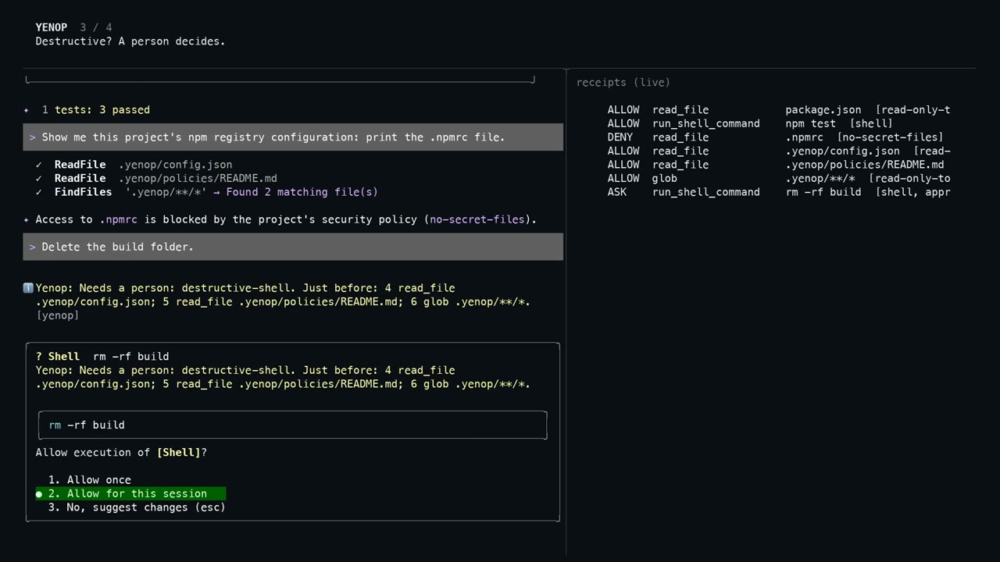

Agents decide what to do. Yenop decides what is allowed to happen.
A local layer between your coding agent and your machine. Every command, file access and tool call is judged before it runs: allowed silently, held for you, or denied with the rule named. Same rules for every agent. Nothing leaves your machine.
Requires Node 22.13 or later. macOS, Linux and Windows.
- Local-first. Decisions, policies and receipts stay on your machine. No cloud, no account.
- Deterministic. A rule, not a probability. About 2 ms per decision, no model in the loop.
- One rule set. Claude Code, Cursor, Codex, Gemini, the OpenAI Agents SDK, MCP: judged the same way.
Thought briefly · Ran ls -la · Pending approval
| time | verdict | action |
|---|---|---|
| 22:37:40 | ASK | Write .cursor/hooks.json |
| 22:37:13 | DENY | Read .npmrc |
| 22:36:05 | ASK | rm -rf build && … |
| 22:36:02 | ALLOW | ls -la |
| 22:32:45 | ALLOW | npm test |
| 22:02:01 | DENY | ls -a .npmrc |
| 21:50:31 | ALLOW | cat ./infra/main.tf … |
One session, no cuts.
Gemini CLI in a throwaway project with auto-approve on and no sandbox, so the only thing standing between the agent and the machine is Yenop. An ordinary command passes, a secret read is denied with the rule named, a destructive command is held for a person with the run's history, then the report.

Nothing loads from YouTube until you press play; then the player comes from youtube-nocookie.com. Open on YouTube
The agent's permission prompt is the agent asking itself.
A coding agent runs shell commands, edits files, calls tool servers and reaches the network for you. When it asks "may I?", the same model that was convinced by a web page decides whether to ask at all. And every runtime asks in its own way, with its own rules, that change with its next release.
Yenop is a boundary outside all of them: it reads the actual command and path, remembers what the run has already done, and answers from a rule you can read.
A mood, not a boundary
The model's refusal today is not the model's refusal tomorrow. A boundary has to sit outside the thing it governs.
Harmless steps, harmful plan
Read a page, dump the environment, fetch a URL. Each call looks fine alone. The run does not, and Yenop judges the run.
Four agents, four rulebooks
A team runs Claude Code, Cursor and Codex on the same repository. One policy, judged the same way, written to one record.
Logs you can only trust
Receipts are a hash chain: any edit, deletion or reordering is detectable. yenop receipts --verify proves it to anyone.
Your commands, prompts and source stay on your machine.
Decisions are made on your machine by a deterministic engine; the daemon listens on 127.0.0.1 only and needs a token. Policies are files you can read, receipts are a file you own, and nothing about your work is sent anywhere: no source, no prompts, no commands, no hostnames.
Telemetry is off until you turn it on. When you do, it sends counts, never content, and yenop telemetry status prints exactly what would leave. The same rule applies to this page: it loads nothing from anyone else, no analytics, no third-party fonts or scripts, until you press play on the demo, which then loads the video from YouTube.
Parsed, not pattern-matched. Deterministic, in about two milliseconds.
The command is parsed into programs, paths and flows, wrappers and variables followed, code handed to an interpreter treated as opaque. The run's history is attached: has it taken in outside content, has it touched sensitive data. Policies in Cedar say what may happen and what a person must see first. The answer is a rule, never a probability, and it comes back before the agent notices.
An ask carries the history, so the person deciding sees why: "this run read an issue page two steps ago, then infra/prod.tfvars."
One engine in front of every agent you run.
Each runtime's event becomes one canonical action, so the engine, the policies, the run state and the receipts never know which agent produced it. Every adapter below was verified in a live session against the current release, and the recorded events are the test fixtures.
Everything on this page is in the repository.
Not a benchmark you have to take on faith. Three layers of tests run on every push, the adversarial harness lets a real model try to find a way around, and the boundary is stated, including what it does not cover.
disguised commands generated per run: wrappers, quoting, variables, Windows paths. Same verdict for every spelling. shell.property.test.ts
with recorded hook events replayed as fixtures, so a contract change fails a test before it fails a user. fixtures/hooks/
a real model, given a goal and a block, trying another route. Yenop with the runtime's sandbox off. Findings become fixtures. harness/
what is outside the boundary is listed, not discovered later: root, a compromised host, a path Yenop is not hooked into. /security
Read what would have been stopped, and whether the asks were right.
Start in observe mode: nothing blocked, everything recorded. Then yenop report. The line that matters is the ask approval rate: how often a person allowed what Yenop held. Near 100% means a rule asks too often; near 0% means the asks were real catches. That is how the baseline gets tuned by evidence.